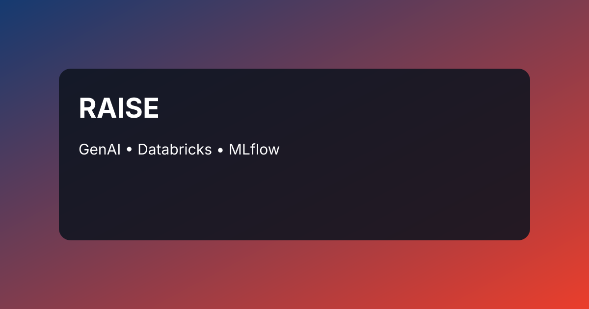
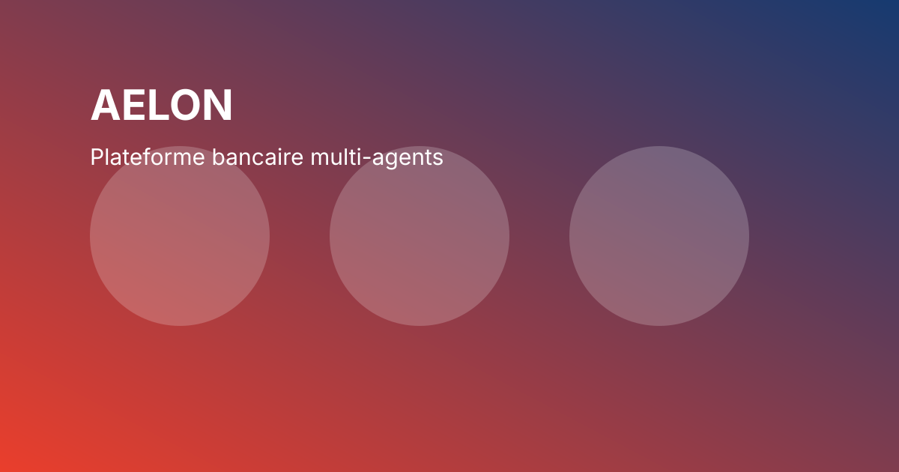
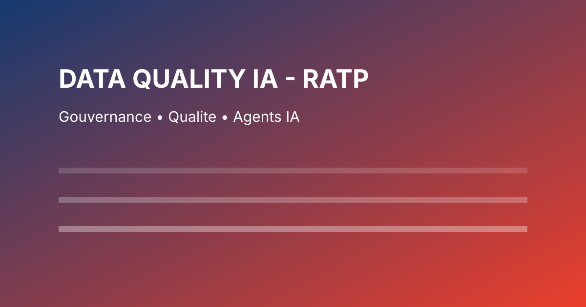
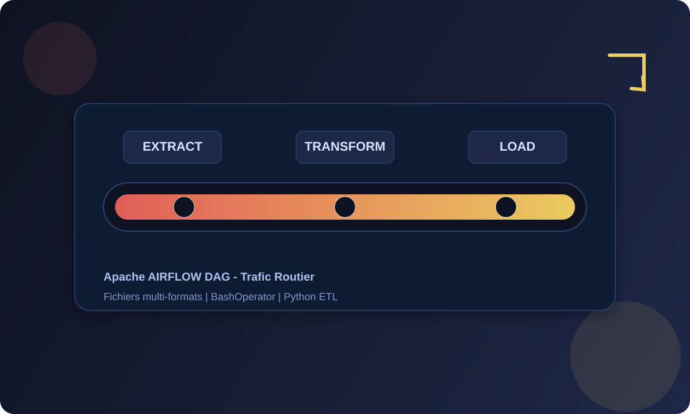
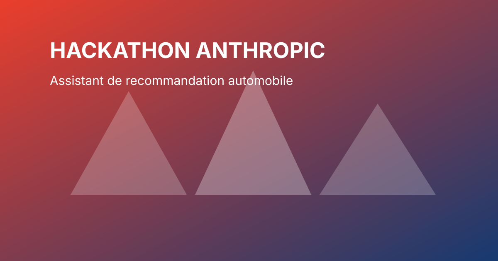

Structurer
Des pipelines data fiables, gouvernes et monitorables pour passer du chaos a la confiance.
Cynthia Sileu Kapnang
Je transforme la donnee en produits intelligents a fort impact metier : pipelines robustes, architecture GenAI fiable, gouvernance et passage a l'echelle.
Je resols les problemes qui bloquent la creation de valeur Data & IA dans les organisations.
Des pipelines data fiables, gouvernes et monitorables pour passer du chaos a la confiance.
Des solutions GenAI utiles au metier avec RAG, LLM, evaluation et architecture multi-agents.
Des usages livrables rapidement, mais pensés pour durer en environnement enterprise.
Des indicateurs et des verbes d'action pour montrer la valeur creee, pas seulement le stack.
Des pipelines robustes et monitorables pour des decisions basees sur des donnees de confiance.
Du prototype IA a un usage metier concret avec des cycles de livraison plus courts.
MLOps, gouvernance et model serving pour rendre les solutions GenAI deployables a l'echelle.
Des solutions techniques reliees a des enjeux operationnels et business mesurables.
De l'analyse de donnees a la conception de solutions IA industrielles.
J'ai commence par comprendre les besoins metier et la qualite de la donnee. Puis j'ai evolue vers la construction de pipelines et la livraison de produits data. Aujourd'hui, je combine Data Engineering et IA Generative pour rendre les usages IA fiables, mesurables et utiles en production.
Ma difference : je ne m'arrete pas au prototype. Je travaille la chaine complete : architecture, gouvernance, evaluation et adoption metier.
Industrialiser des chatbots GenAI sans perdre en fiabilité, traçabilité ni gouvernance.
Pipeline standardisé, RAG, MLflow et Unity Catalog pour sécuriser le cycle de vie IA.
Un socle plus robuste pour des usages IA en production, avec un contrôle plus clair des modèles.
Créer une expérience bancaire premium et segmentée selon les profils clients, analystes et data stewards.
Plateforme multi-espaces avec backend FastAPI, orchestrateur multi-agent et masquage des données sensibles.
Un service plus sûr, plus contextuel et mieux piloté par les KPI, la conformité et l'observabilité.
Détecter plus tôt les anomalies et renforcer la confiance dans les données critiques.
Agents IA couplés à des règles métier et à des traitements PySpark sur Databricks.
Une gouvernance plus fiable et un contrôle plus rapide des écarts métier.
“Cynthia apporte une vraie maturité entre vision métier et exécution technique. Elle ne se contente pas de livrer un prototype : elle structure une solution exploitable, claire et alignée sur les attentes du métier.”
“Sa force est de simplifier des sujets complexes : qualité des données, GenAI, évaluation des agents. Le résultat est concret, lisible et directement utile pour les équipes produit et opérationnelles.”
Portefeuille Data & IA en environnement enterprise.

Industrialisation de chatbots GenAI et RAG pour un déploiement fiable, traçable et gouverné.
Technologies : Databricks, MLflow, Unity Catalog, Python
Impact : meilleure traçabilité des modèles et gouvernance IA.

Plateforme bancaire multi-espaces avec assistance client, analytics et gouvernance IA.
Technologies : Azure OpenAI, RAG, FastAPI, Python
Impact : expérience client plus sûre, plus rapide et plus orientée décision.
Pipeline d’évaluation d’agents IA pour comparer qualité des réponses et qualité du retrieval.
Technologies : RAGAS, Streamlit, Python, LLM, Azure Blob Storage
Impact : benchmark fiable avant mise en production.

Agents IA pour la détection d’anomalies et la gouvernance de la qualité des données.
Technologies : PySpark, Databricks, Python, Rules Engine
Impact : détection plus rapide des écarts critiques et meilleure confiance dans les données.

Pipeline automatisé de collecte, transformation et consolidation de données de trafic.
Technologies : Apache AIRFLOW, BashOperator, Bash, Python, ETL

Assistant de recommandation automobile base sur Claude.
Technologies : Claude, Python, Prompt Engineering
Impact : prototype fonctionnel et personnalisation rapide.
Parcours de certification oriente Data Engineering, IA Generative et Cloud.
Fondamentaux Lakehouse, architecture Databricks et bonnes pratiques Data Engineering.
PDFConception de solutions d'IA Generative et agents IA en contexte enterprise.
PDFModelisation BI, dashboards et communication visuelle de la performance.
VoirFondamentaux cloud public et services data manages sur GCP.
VoirPrototypage d'un assistant conversationnel avec Claude en contexte competitif.
PDFCertification orientee Product Information Management (PIM) et Master Data Management (MDM).
Date : 2026
VoirAu cours de cette formation et de ses assessments pratiques, j’ai travaillé sur l’ensemble des composantes d’une plateforme PIM/MDM : modélisation des données, workflows, intégration, APIs REST et reporting de gouvernance.
PIM • MDM • Data Governance • Data Quality • REST APIs • Data Integration • Reporting & Analytics
Date : 2026
CredlyUn stack choisi pour accelerer, industrialiser et gouverner.
Activite, langages et volume de projets.
Disponible pour des opportunites Data Engineering, GenAI, IA et Cloud.
Je suis ouverte a des opportunites CDI, CDD ou missions freelance dans les domaines de la Data Engineering, de l'IA Generative et du Cloud.